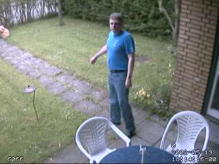
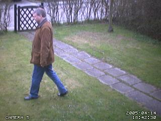
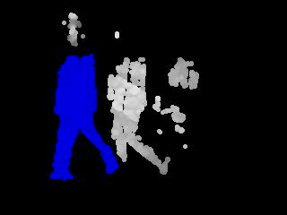

Basic Setup
-
Motion is able to process images from many different types of cameras. The following is brief overview
of the process to set up the Motion software.
- Determine the type of camera
- v4l2 devices which are most webcams
- Composite capture cards
- Network or IP cameras
- The PI camera
- Static movie files.
- Specify the camera in the configuration files.
- Start Motion from a terminal via the command line
- Review the messages to ensure camera was found and press cntrl-c to exit
- Specify a target_dir in the configuration file.
- Enable the web stream in the configuration file
- Specify a stream_port
- Optionally turn off stream_localhost if you want to view the stream from a different computer
- Enable the web control in the configuration file
- Specify a webcontrol_port
- Optionally turn off webcontrol_localhost if you want to view the webcontrol from a different computer
- Specify which parameters to show on the webcontrol via webcontrol_parms
- Optionally specify a stream_preview_method
- Refine how the image is captured with the image processing parameters
- Specify the motion detection parameters
- Execute scripts, Save pictures or movies.
- Specify stream_preview_method 3
- Specify webcontrol_parms 2
- Start Motion and in a web browser navigate to the webcontrol port
- Try adjusting the threshold, noise_level, despeckle_filter and smart_mask_speed
- Make sure to write configuration to file in order to save any changes.
- Run automatically at start (Run as service)
- Remove depreciated parameters warnings (Remove Depreciated)
- List/include all possible configuration parameters (All parameters)
- Start the Motion service
sudo service motion start - Stop the Motion service
sudo service motion stop - Restart the Motion service
sudo service motion restart
sudo modprobe bcm2835-v4l2. This
will set up the camera as a normal v4l2 device and it can be accessed via a standard /dev/videoX device. If Motion is
built from source or installed via the deb packages on the project release page, then an additional option is to set
up the camera using the mmalcam_name parameter or using
the bcm2835-v4l2 module. When Motion is installed via apt, the mmalcam option is not available.
Composite video cards are normally made with a chip called BT878 (older cards have a BT848). They
all use the Linux driver called 'bttv'.
There are cards with more then one video input but still only one BT878 chip. They have a video multiplexer which
input is selected with the config option input. Input channel numbers start at 0
(which is why the value -1 and not 0 disables input selection). There are video capture cards available
with 4 or 8 inputs but only one chip. They present themselves as one single video device and
you select input using the 'input' option. If you define e.g. 4 camera config files with the
same video device name but different input numbers Motion automatically
goes into round robin mode.
Many TV tuner cards have the input channels: TV Tuner = 0, Standard composite video = 1, S-VHS = 3.
Others have TV=0, composite video 1= 1, composite video = 2, S-VHS = 3.
For video capture cards input 1 is normally the composite video input.
Some capture cards are specially made for surveillance with for example 4 inputs.
Others have a TV tuner, a composite input and perhaps also a S-Video input.
For all these cards the inputs are numbered. The numbering varies from card to card so the easiest
is to experiment with a program such as VLC that can show the video stream.
If you use the TV tuner input you also need to set the frequency of the TV channel using the
option frequency. Otherwise
set frequency to 0.
Finally you need to set the TV norm.
Values: 0 (PAL), 1 (NTSC), 2 (SECAM), 3 (PAL NC no colour). Default is 0 (PAL).
If your camera is a PAL black and white you may get a better result with norm=3 (PAL no colour).
Static files can also be processed by Motion in one of two ways. The first method
is by using the netcam_url option and using a prefix of file:\\. With
this method, Motion will process the file at the speed specified by
framerate. This allows the user to either speed up or slow down the video
processing to suit the particular need.
The second option for processing a static file requires a bit of additional setup and uses a
v4l2loopback device. To set this up, first install the loopback software as described in the
Output - Pipe Options
section of this guide to create a /dev/videoX device and then use software such as ffmpeg to stream
the static file into the v4l2 device. e.g.
ffmpeg -re -i mymovie.mp4 -f v4l2 /dev/video0 Then in a separate terminal, start Motion
with it set to use the /dev/video0 device as input. This method can can also be used to
reformat the content to a different format. The following outputs the original movie into a gray pixel format.
ffmpeg -re -i mymovie.mp4 -f v4l2 -pix_fmt gray /dev/video0
This can be helpful as a interim process where ffmpeg supports a particular input but that format is not yet supported
by Motion.
Run as Service
The following instructions are only applicable to Debian and Ubuntu based systems. For other distributions, users
should consult their distribution documentation and provide pull requests to the Motion developers so that this
section can be updated with their distribution.
Motion can be set up to run as a service which means that it will start automatically whenever the computer
is started. When Motion is installed from apt or from a deb file, default files are installed which can be
easily modified so that Motion starts as a service. If Motion is built directly from source and installed,
then these additional files will need to be copied, modified and installed manually from the source and packaging
repositories.
When setting up Motion to run as a service, it should be done only after all the other configuration
has been completed. It is much easier to edit and revise the parameters when Motion is just running
in a terminal rather than as a service.
To set up to run as a service, first edit the file /etc/default/motion and revise the line
to indicate start_motion_daemon=yes.
Next, edit the main motion.conf file and specify daemon as on
When the computer is restarted, Motion should now be running. The following commands control
the Motion service.
motion and this user is automatically
added to the user group of video. By only be included in this user group, when Motion is
run, it will only have limited permissions. It is NOT recommended that this user get added to the
sudo group. Instead, only add this user to groups that are specifically required.
On newer distributions, the above method of running a service is depreciated (but still functional) in
favor of the systemctl method. Since this is not available on all the distributions which Motion is
deployed, the above method is retained. Once systemctl is available on all the deployed versions, Motion
will transition to systemctl as the service method. For users that wish to systemctl rather than the above
method, a motion.system file is included in the source code.
For users that are building and installing from source without a deb file, the file motion.init-Debian
will need to be copied from the examples directory or from the source directory. It will need to be renamed and put
into /etc/init.d/motion. Ensure that it is also marked as executable and has root ownership. Next,
create the file /etc/default/motion with the entry as specified above. Finally, create the
motion user as needed. The scripts that create the groups and users when using
the deb packages can be used as a model. These scripts can be reviewed in the motion-packaging repo, within the
debian directory, motion.postinst (e.g. motion-packaging/debian/motion.postinst
Command Line Options
-
SYNOPSIS
- -c : Full path and filename of config file.
- -h : Show help screen
- -b : Run in daemon mode
- -n : Run in non-daemon mode
- -s : Run in setup mode. Also forces non-daemon mode.
- -d : Run with message log level 1 - 9
- -k : Run with message log type 1 - 9
- -l : Full path and file name for log file
- -p : Full path and file name for the process id file
- -m : Start in pause mode
motion [ -hbnsm ] [ -c config file path ] [ -d level ] [ -k level ] [ -p pid_file ] [ -l log_file ]
The Configuration Files
-
If Motion was invoked with command line option
- Current directory from where motion was invoked
- Then in a directory called '.motion' in the current users home directory (shell environment variable $HOME). E.g. /home/goofy/.motion/motion.conf
- The directory defined by the --sysconfdir=DIR when running .configure during installation of
Motion
(If this option was not defined the default is /etc/motion) - Motion reads the configuration file motion.conf from the beginning of the file going down line by line.
- If the option "camera" is defined in motion.conf, the camera configuration file(s) is/(are) read.
- Motion continues reading the rest of the motion.conf file. Any options from here will overrule the same option previously defines in a camera config file.
- Motion reads the command line option again overruling any previously defined options.
-c pathname Motion will expect the config file to
be as specified. When you specify the config file on the command line with -c you can call it anything.
If you do not specify -c or the filename you give Motion does not exist, Motion will search for the
configuration file called 'motion.conf' in the following order:
videodevice /dev/video0
camera1.conf:
videodevice /dev/video1
Motion reads its configuration parameters in the following sequence. If the same
parameter exists more than one place the last one read wins
write configuration. This will re-write the configuration files with all the current
parameters to Motion. Note that depending upon where the configuration files are located, Motion
may need to be started using sudo.
Parameters in distributed configuration files
As of this writing, Motion includes over 150 parameters. With this volume of parameters, navigating
the configuration file with every possible has become onerous. Starting with version 4.2, the distributed
configuration files only include a limited subset of the configuration parameters. Users can add to the
files as needed the parameters that are applicable to their set up. Users that wish to have every parameter
listed and included in the configuration file can follow the process described immediately above in
the Remove Depreciated section.
i.e. Use the webcontrol interface to write out the configuration file.
Extended descriptions / documentation are not included in the configuration file. This guide
should be consulted for documentation of the configuration parameters.
Signals (sent with e.g. kill command)
-
A signal can be sent from the command line by typing
e.g.
kill -s SIGHUP pid, where the last parameter is the process ID which
you get by typing ps -ef ¦ grep motion. The PID is the first on the
list which is the parent process for the threads.
Motion responds to the following signals:
| Signal | Description | Editors comment |
|---|---|---|
| SIGHUP | The config file will be reread. | This is a very useful signal when you experiment with settings in the config file. |
| SIGTERM | If needed motion will create an movie file of the last event and exit | |
| SIGUSR1 | Motion will create an movie file of the current event. |
Configuration Options-Listed Alphabetically
-
These are the options that can be used in the config file.
All number values are integer numbers (no decimals allowed). Boolean options can be on or off.
Some configuration options are only used if Motion is built on a system that has the matching software libraries installed (MySQL, PostgreSQL, SQLite, FFMPEG, etc).
| Version 4.0 | Version 4.1 | Version 4.2 | Current Version |
| area_detect | area_detect | area_detect | area_detect |
| auto_brightness | auto_brightness | auto_brightness | auto_brightness |
| camera | camera | camera | camera |
| camera_dir | camera_dir | camera_dir | camera_dir |
| camera_id | camera_id | camera_id | camera_id |
| camera_name | camera_name | camera_name | camera_name |
| daemon | daemon | daemon | daemon |
| database_busy_timeout | database_busy_timeout | database_busy_timeout | database_busy_timeout |
| database_dbname | database_dbname | database_dbname | database_dbname |
| database_host | database_host | database_host | database_host |
| database_password | database_password | database_password | database_password |
| database_port | database_port | database_port | database_port |
| database_type | database_type | database_type | database_type |
| database_user | database_user | database_user | database_user |
| despeckle_filter | despeckle_filter | despeckle_filter | despeckle_filter |
| emulate_motion | emulate_motion | emulate_motion | emulate_motion |
| event_gap | event_gap | event_gap | event_gap |
| flip_axis | flip_axis | flip_axis | |
| framerate | framerate | framerate | framerate |
| frequency | frequency | frequency | frequency |
| height | height | height | height |
| input | input | input | input |
| lightswitch_frames | lightswitch_frames | ||
| lightswitch | lightswitch | lightswitch_percent | lightswitch_percent |
| locate_motion_mode | locate_motion_mode | locate_motion_mode | locate_motion_mode |
| locate_motion_style | locate_motion_style | locate_motion_style | locate_motion_style |
| logfile | logfile | log_file | log_file |
| log_level | log_level | log_level | log_level |
| log_type | log_type | log_type | log_type |
| mask_file | mask_file | mask_file | mask_file |
| mask_privacy | mask_privacy | mask_privacy | |
| minimum_frame_time | minimum_frame_time | minimum_frame_time | minimum_frame_time |
| minimum_motion_frames | minimum_motion_frames | minimum_motion_frames | minimum_motion_frames |
| mmalcam_control_params | mmalcam_control_params | mmalcam_control_params | mmalcam_control_params |
| mmalcam_name | mmalcam_name | mmalcam_name | mmalcam_name |
| ffmpeg_bps | ffmpeg_bps | movie_bps | movie_bps |
| ffmpeg_video_codec | ffmpeg_video_codec | movie_codec | movie_codec |
| ffmpeg_duplicate_frames | ffmpeg_duplicate_frames | movie_duplicate_frames | movie_duplicate_frames |
| extpipe | extpipe | movie_extpipe | movie_extpipe |
| use_extpipe | use_extpipe | movie_extpipe_use | movie_extpipe_use |
| movie_filename | movie_filename | movie_filename | movie_filename |
| max_mpeg_time | max_movie_time | movie_max_time | movie_max_time |
| ffmpeg_output_movies | ffmpeg_output_movies | movie_output | movie_output |
| ffmpeg_output_debug_movies | ffmpeg_output_debug_movies | movie_output_motion | movie_output_motion |
| movie_passthrough | movie_passthrough | ||
| ffmpeg_variable_bitrate | ffmpeg_variable_bitrate | movie_quality | movie_quality |
| native_language | native_language | ||
| netcam_decoder | |||
| netcam_highres | netcam_highres | netcam_highres | |
| netcam_keepalive | netcam_keepalive | netcam_keepalive | netcam_keepalive |
| netcam_proxy | netcam_proxy | netcam_proxy | netcam_proxy |
| netcam_tolerant_check | netcam_tolerant_check | netcam_tolerant_check | netcam_tolerant_check |
| netcam_url | netcam_url | netcam_url | netcam_url |
| rtsp_uses_tcp |
rtsp_uses_tcp | netcam_use_tcp | netcam_use_tcp |
| netcam_userpass | netcam_userpass | netcam_userpass | netcam_userpass |
| noise_level | noise_level | noise_level | noise_level |
| noise_tune | noise_tune | noise_tune | noise_tune |
| norm | norm | norm | norm |
| on_area_detected | on_area_detected | on_area_detected | on_area_detected |
| on_camera_found | on_camera_found | on_camera_found | |
| on_camera_lost | on_camera_lost | on_camera_lost | on_camera_lost |
| on_event_end | on_event_end | on_event_end | on_event_end |
| on_event_start | on_event_start | on_event_start | on_event_start |
| on_motion_detected | on_motion_detected | on_motion_detected | on_motion_detected |
| on_movie_end | on_movie_end | on_movie_end | on_movie_end |
| on_movie_start | on_movie_start | on_movie_start | on_movie_start |
| on_picture_save | on_picture_save | on_picture_save | on_picture_save |
| exif_text |
exif_text | picture_exif | picture_exif |
| output_pictures | output_pictures | picture_output | picture_output |
| output_debug_pictures | output_debug_pictures | picture_output_motion | picture_output_motion |
| picture_filename | picture_filename | picture_filename | picture_filename |
| picture_type | picture_type | picture_type | picture_type |
| quality | quality | picture_quality | picture_quality |
| process_id_file | process_id_file | pid_file | pid_file |
| post_capture | post_capture | post_capture | post_capture |
| pre_capture | pre_capture | pre_capture | pre_capture |
| quiet | quiet | quiet | quiet |
| rotate | rotate | rotate | rotate |
| roundrobin_frames | roundrobin_frames | roundrobin_frames | roundrobin_frames |
| roundrobin_skip | roundrobin_skip | roundrobin_skip | roundrobin_skip |
| switchfilter | switchfilter | roundrobin_switchfilter | roundrobin_switchfilter |
| setup_mode | setup_mode | setup_mode | setup_mode |
| smart_mask_speed | smart_mask_speed | smart_mask_speed | smart_mask_speed |
| snapshot_filename | snapshot_filename | snapshot_filename | snapshot_filename |
| snapshot_interval | snapshot_interval | snapshot_interval | snapshot_interval |
| sql_log_movie | sql_log_movie | sql_log_movie | sql_log_movie |
| sql_log_picture | sql_log_picture | sql_log_picture | sql_log_picture |
| sql_log_snapshot | sql_log_snapshot | sql_log_snapshot | sql_log_snapshot |
| sql_log_timelapse | sql_log_timelapse | sql_log_timelapse | sql_log_timelapse |
| sql_query | sql_query | sql_query | sql_query |
| sql_query_start | sql_query_start | sql_query_start | |
| sql_query_stop | sql_query_stop | ||
| stream_auth_method | stream_auth_method | stream_auth_method | stream_auth_method |
| stream_authentication | stream_authentication | stream_authentication | stream_authentication |
| stream_cors_header | stream_cors_header | ||
| stream_grey | stream_grey | ||
| stream_localhost | stream_localhost | stream_localhost | stream_localhost |
| stream_maxrate | stream_maxrate | stream_maxrate | stream_maxrate |
| stream_motion | stream_motion | stream_motion | stream_motion |
| stream_port | stream_port | stream_port | stream_port |
| stream_preview_method | stream_preview_method | ||
| stream_preview_newline | stream_preview_newline | stream_preview_newline | stream_preview_newline |
| stream_preview_scale | stream_preview_scale | stream_preview_scale | stream_preview_scale |
| stream_quality | stream_quality | stream_quality | stream_quality |
| stream_tls | stream_tls | ||
| target_dir | target_dir | target_dir | target_dir |
| text_changes | text_changes | text_changes | text_changes |
| text_event | text_event | text_event | text_event |
| text_left | text_left | text_left | text_left |
| text_right | text_right | text_right | text_right |
| text_double | text_double | text_scale | text_scale |
| threshold | threshold | threshold | threshold |
| threshold_maximum | threshold_maximum | ||
| threshold_tune | threshold_tune | threshold_tune | threshold_tune |
| ffmpeg_video_codec | timelapse_codec | timelapse_codec | timelapse_codec |
| timelapse_filename | timelapse_filename | timelapse_filename | timelapse_filename |
| timelapse_fps | timelapse_fps | timelapse_fps | |
| ffmpeg_timelapse | timelapse_interval | timelapse_interval | timelapse_interval |
| ffmpeg_timelapse_mode | timelapse_mode | timelapse_mode | timelapse_mode |
| track_auto | track_auto | track_auto | track_auto |
| track_generic_move | track_generic_move | ||
| track_iomojo_id | track_iomojo_id | track_iomojo_id | track_iomojo_id |
| track_maxx | track_maxx | track_maxx | track_maxx |
| track_maxy | track_maxy | track_maxy | track_maxy |
| track_motorx | track_motorx | track_motorx | track_motorx |
| track_motory | track_motory | track_motory | track_motory |
| track_move_wait | track_move_wait | track_move_wait | track_move_wait |
| track_port | track_port | track_port | track_port |
| track_speed | track_speed | track_speed | track_speed |
| track_step_angle_x | track_step_angle_x | track_step_angle_x | track_step_angle_x |
| track_step_angle_y | track_step_angle_y | track_step_angle_y | track_step_angle_y |
| track_stepsize | track_stepsize | track_stepsize | track_stepsize |
| track_type | track_type | track_type | track_type |
| tunerdevice | tunerdevice | tunerdevice | tunerdevice |
| v4l2_palette | v4l2_palette | v4l2_palette | v4l2_palette |
| brightness | brightness | vid_control_params | vid_control_params |
| contrast | contrast | vid_control_params | vid_control_params |
| hue | hue | vid_control_params | vid_control_params |
| power_line_frequency | power_line_frequency | vid_control_params | vid_control_params |
| saturation | saturation | vid_control_params | vid_control_params |
| video_pipe | video_pipe | video_pipe | video_pipe |
| motion_video_pipe | motion_video_pipe | video_pipe_motion | video_pipe_motion |
| videodevice | videodevice | videodevice | videodevice |
| webcontrol_auth_method | webcontrol_auth_method | ||
| webcontrol_authentication | webcontrol_authentication | webcontrol_authentication | webcontrol_authentication |
| webcontrol_cert | webcontrol_cert | ||
| webcontrol_cors_header | webcontrol_cors_header | ||
| webcontrol_html_output | webcontrol_html_output | webcontrol_interface | webcontrol_interface |
| ipv6_enabled | ipv6_enabled | webcontrol_ipv6 | webcontrol_ipv6 |
| webcontrol_key | webcontrol_key | ||
| webcontrol_localhost | webcontrol_localhost | webcontrol_localhost | webcontrol_localhost |
| webcontrol_parms | webcontrol_parms | webcontrol_parms | |
| webcontrol_port | webcontrol_port | webcontrol_port | webcontrol_port |
| webcontrol_tls | webcontrol_tls | ||
| width | width | width | width |
| sdl_threadnr | -Depreciated | -Depreciated | -Depreciated |
| stream_limit | stream_limit | -Depreciated | -Depreciated |
| substream_port | -Depreciated | -Depreciated |
Configuration Options-Listed by Topic
-
These are the options that can be used in the config file.
All number values are integer numbers (no decimals allowed). Boolean options can be on or off.
Some configuration options are only used if Motion is built on a system that has the matching software libraries installed (MySQL, PostgreSQL, SQLite, FFMPEG, etc).
System Processing-General Info
| daemon | setup_mode | pid_file | log_file |
| log_level | log_type | quiet | native_language |
| camera_name | camera_id | camera | camera_dir | target_dir |
| videodevice | vid_control_params | v4l2_palette | input |
| norm | frequency | auto_brightness | tunerdevice |
| roundrobin_frames | roundrobin_skip | roundrobin_switchfilter |
| netcam_url | netcam_highres | netcam_userpass | netcam_decoder |
| netcam_keepalive | netcam_proxy | netcam_tolerant_check | netcam_use_tcp |
| width | height | framerate | minimum_frame_time |
| rotate | flip_axis | locate_motion_mode | locate_motion_style |
| text_left | text_right | text_changes | text_scale |
| text_event |
| on_event_start | on_event_end | on_picture_save | on_motion_detected |
| on_area_detected | on_movie_start | on_movie_end | on_camera_lost |
| on_camera_found |
| picture_output | picture_output_motion | picture_type | picture_quality |
| picture_exif | picture_filename | snapshot_interval | snapshot_filename |
Configuration Options-Detail Descriptions
-
The following section provides detailed descriptions of each of the configuration options.
- Type: Boolean
- Range / Valid values: on, off
- Default: off
- Type: Boolean
- Range / Valid values: on, off
- Default: off
- Disable despeckle (comment it out in motion.conf).
- Disable smartmask
- Enable both the webcontrol and streams make sure to specify the webcontrol_parms. The below assumes that the webcontrol is specified as port 8080 and the stream as 8081
- Start Motion in setup mode
- Open a browser and connect to the webcontrol interface. http://localhost:8080/ . You can now control and change almost anything while Motion is running. To disable a feature enter a space.
- Start by experimenting with noise level. Do this both during daylight and during darkness. You will be surprised to see how much noise a camera makes during night. Try using the automatic noise feature. It should work for most.
- Now try the despeckle feature. Enable it using the recommended default EedDl. If this is not enough experiment. Remember that the l must be the last letter.
- Set the threshold to what you want to trigger Motion.
- Type: String
- Range / Valid values: Max 4095 characters
- Default: Not defined
- Type: String
- Range / Valid values: Max 4095 characters
- Default: Not defined
- Type: Integer
- Range / Valid values: 1 - 9
- Default: 6
- Type: Discreet Strings
- Range / Valid values: See Below
- Default: ALL
- Type: Boolean
- Range / Valid values: on, off
- Default: on
- Type: Boolean
- Range / Valid values: on, off
- Default: on
- Type: String
- Range / Valid values: Max 4095 characters
- Default: Not defined
- Type: Integer
- Range / Valid values: 1 - 32000
- Default: The sequence that the camera file is read
- Type: String
- Range / Valid values: Max 4095 characters
- Default: Not defined
- Type: String
- Range / Valid values: Max 4095 characters
- Default: Not defined
- Type: String
- Range / Valid values: Max 4095 characters
- Default: Not defined = current directory
- Type: String
- Range / Valid values: Max 4095 characters
- Default: /dev/video0
- Type: String
- Range / Valid values: Max 4095 characters
- Default: Not defined
- brightness
- contrast
- hue
- power_line_frequency
- saturation
- [1:ml1:c1] [INF] [VID] v4l2_ctrls_list: ---------Controls---------
- [1:ml1:c1] [INF] [VID] v4l2_ctrls_list: V4L2 ID Name and Range
- [1:ml1:c1] [INF] [VID] v4l2_ctrls_list: ID09963776 Brightness, 0 to 127
- [1:ml1:c1] [INF] [VID] v4l2_ctrls_list: ID09963777 Contrast, 0 to 63
- [1:ml1:c1] [INF] [VID] v4l2_ctrls_list: ID09963778 Saturation, -100 to 100
- [1:ml1:c1] [INF] [VID] v4l2_ctrls_list: ID09963788 White Balance, Automatic, 0 to 4
- [1:ml1:c1] [INF] [VID] v4l2_ctrls_list: menu item: Value 0 Indoor (Incandescant Lighting)
- [1:ml1:c1] [INF] [VID] v4l2_ctrls_list: menu item: Value 1 Outdoor (Sunlight) Mode
- [1:ml1:c1] [INF] [VID] v4l2_ctrls_list: menu item: Value 2 Indoor (Fluorescent Lighting) M
- [1:ml1:c1] [INF] [VID] v4l2_ctrls_list: menu item: Value 3 Manual Mode
- [1:ml1:c1] [INF] [VID] v4l2_ctrls_list: menu item: Value 4 Auto Mode
- [1:ml1:c1] [INF] [VID] v4l2_ctrls_list: ID09963790 Red Balance, 0 to 255
- [1:ml1:c1] [INF] [VID] v4l2_ctrls_list: ID09963791 Blue Balance, 0 to 255
- [1:ml1:c1] [INF] [VID] v4l2_ctrls_list: ID09963792 Gamma, 0 to 31
- [1:ml1:c1] [INF] [VID] v4l2_ctrls_list: ID09963793 Exposure, 0 to 255
- [1:ml1:c1] [INF] [VID] v4l2_ctrls_list: ID09963794 Gain, Automatic, 0 to 1
- [1:ml1:c1] [INF] [VID] v4l2_ctrls_list: ID09963795 Gain, 0 to 63
- [1:ml1:c1] [INF] [VID] v4l2_ctrls_list: ID09963804 Backlight Compensation, 0 to 1
- [1:ml1:c1] [INF] [VID] v4l2_ctrls_list: ID09963807 Color Effects, 0 to 1
- [1:ml1:c1] [INF] [VID] v4l2_ctrls_list: menu item: Value 0 None
- [1:ml1:c1] [INF] [VID] v4l2_ctrls_list: menu item: Value 1 Black & White
- [1:ml1:c1] [INF] [VID] v4l2_ctrls_list: ID09963809 Band-Stop Filter, 0 to 1
- [1:ml1:c1] [INF] [VID] v4l2_ctrls_list: ID10025216 Auto contour, 0 to 1
- [1:ml1:c1] [INF] [VID] v4l2_ctrls_list: ID10025217 Contour, 0 to 63
- [1:ml1:c1] [INF] [VID] v4l2_ctrls_list: ID10025218 Dynamic Noise Reduction, 0 to 3
- [1:ml1:c1] [INF] [VID] v4l2_ctrls_list: ID10025219 Auto White Balance Speed, 1 to 32
- [1:ml1:c1] [INF] [VID] v4l2_ctrls_list: ID10025220 Auto White Balance Delay, 0 to 63
- [1:ml1:c1] [INF] [VID] v4l2_ctrls_list: ID10025221 Save User Settings, 0 to 0
- [1:ml1:c1] [INF] [VID] v4l2_ctrls_list: ID10025222 Restore User Settings, 0 to 0
- [1:ml1:c1] [INF] [VID] v4l2_ctrls_list: ID10025223 Restore Factory Settings, 0 to 0
- [1:ml1:c1] [INF] [VID] v4l2_ctrls_list: --------------------------
- Type: Integer
- Range / Valid values: 0 - 21
- Default: 17
- Type: Integer
- Range / Valid values: -1, 0 - 7
- Default: -1
- Type: Integer
- Range / Valid values: 0 (PAL), 1 (NTSC), 2 (SECAM), 3 (PAL NC no colour)
- Default: 0 (PAL)
- Type: Integer
- Range / Valid values: 0 - 999999
- Default: 0 (Not set)
- Type: Integer
- Range / Valid values: 0 - 3
- Default: 0
- 1: Use the brightness control to regulate the brightness (equivalent to specifying on/yes)
- 2: Use the exposure control to regulate the brightness
- 3: Use the exposure absolute control to regulate the brightness
- Type: String
- Range / Valid values: Max 4095 characters
- Default: /dev/tuner0
- Type: Integer
- Range / Valid values: 1 - 2147483647
- Default: 1
- Type: Integer
- Range / Valid values: 1 - 2147483647
- Default: 1
- Type: Boolean
- Range / Valid values: on, off
- Default: off
- Type: String
- Range / Valid values: Max 4095 characters
- Default: Not defined
- Type: String
- Range / Valid values: Max 4095 characters
- Default: Not defined
- Type: String
- Range / Valid values: Max 4095 characters
- Default: Not defined
- Type: String
- Range / Valid values: Max 4095 characters
- Default: Not defined
- Type: String
- Range / Valid values: Max 4095 characters
- Default: off
- off: The historical implementation using HTTP/1.0, closing the socket after each http request.
- force: Use HTTP/1.0 requests with keep alive header to reuse the same connection.
- on: Use HTTP/1.1 requests that support keep alive as default.
- Type: String
- Range / Valid values: Max 4095 characters
- Default: Not defined
- Type: Boolean
- Range / Valid values: on, off
- Default: off
- Type: Boolean
- Range / Valid values: on, off
- Default: on
- Type: String
- Range / Valid values: Max 4095 characters
- Default: Not defined
- Type: String
- Range / Valid values: Max 4095 characters
- Default: Not defined
- Horizontal Flip: -hf
- Vertical Flip: -vf
- Rotation: -rot
- Type: Integer
- Range / Valid values: Device Dependent
- Default: 640
- Type: Integer
- Range / Valid values: Device Dependent
- Default: 480
- Type: Integer
- Range / Valid values: 2 - 100
- Default: 15
- Type: Integer
- Range / Valid values: 0 - 2147483647
- Default: 0
- Type: Discrete Integers
- Range / Valid values: 0, 90, 180, 270
- Default: 0 (not rotated)
- Type: Discrete Strings
- Range / Valid values: none, v, h
- Default: none (no change)
- Type: Discrete Strings
- Range / Valid values: on, off, preview
- Default: off
- Type: Discrete Strings
- Range / Valid values: box, redbox, cross, redcross
- Default: box
- Type: String
- Range / Valid values: Max 4095 characters
- Default: Not defined
- Type: String
- Range / Valid values: Max 4095 characters
- Default: %Y-%m-%d\\n%T
- Type: Boolean
- Range / Valid values: on, off
- Default: off
- Type: Integer
- Range / Valid values: 1 - 10
- Default: 1
- Type: String
- Range / Valid values: Max 4095 characters
- Default: %Y%m%d%H%M%S
- Type: Boolean
- Range / Valid values: on off
- Default: off
- Type: Integer
- Range / Valid values: 1 - 2147483647
- Default: 1500
- Type: Integer
- Range / Valid values: 0, 1 to unlimited
- Default: 0 (off)
- Type: Boolean
- Range / Valid values: on, off
- Default: off
- Type: Integer
- Range / Valid values: 1 - 255
- Default: 32
- Type: Boolean
- Range / Valid values: on, off
- Default: on
- Type: String
- Range / Valid values: Combinations of E,e,D,d and l
- Default: Not defined
- Type: String
- Range / Valid values: Max 4095 characters
- Default: Not defined
- 1 2 3
- 4 5 6
- 7 8 9
- Type: String
- Range / Valid values: Max 4095 characters
- Default: Not defined
- Type: String
- Range / Valid values: Max 4095 characters
- Default: Not defined
- Type: Integer
- Range / Valid values: 0 - 10
- Default: 0 (disabled)
- Type: Integer
- Range / Valid values: 0 - 100
- Default: 0 (disabled)
- Type: Integer
- Range / Valid values: 1 - 1000
- Default: 5
- Type: Integer
- Range / Valid values: 1 - 1000s
- Default: 1
- Type: Integer
- Range / Valid values: 0 - 2147483647
- Default: 60
- A timer that timeouts 'event_gap' seconds after the last video frame with motion is detected.
- If post_capture is activated then the gap timer starts counting after the last image of the post_capture buffer has been saved.
- The event_gap timer is reset and starts all over each time new motion is detected, so you will not miss any action by having a short 'gap' value. It will just create more events (e.g. more mpegs files)
- When the timer runs out the event number is increased by one next time motion is detected. When you use the %v conversion specifier in filenames or text features this means that the number in filename or text increased by one.
- The pre_capture feature only works at the beginning of an event. So if you have a very large 'event_gap' value pre_capture is not working very often.
- When you make movies using the ffmpeg features a new movie file is started at the beginning of an event when the first motion is detected. When 'event_gap' seconds has passed without motion (and post_captured frames saved) the movie files are completed and closed.
- Do not use large event_gap values to generate one large movie file. If Motion stops working this movie file never gets properly completed and closed you will not be able to view it.
- Some of the tracking features sets the camera back to the center position when an event is over.
- Type: Integer
- Range / Valid values: 0 - 100s
- Default: 0 (disabled)
- Type: Integer
- Range / Valid values: 0 - 2147483647
- Default: 0 (disabled)
- Anyone with access to the remote control port (http) can execute any command on your computer with the same privileges as the user running Motion. Anyone can access your control port if you have not either limited access to localhost or limited access using firewalls in the server. You should always have a router between a machine running Motion with remote control enabled and the Internet and make sure the Motion control port is not accessible from the outside.
- If you limit control port to localhost you still need to take care of any user logging into the server with any kind of GUI or terminal session. All it takes is a browser or single command line execution to change settings in Motion.
- It is a good idea to run Motion as a harmless user. Not as root!!
- Type: String
- Range / Valid values: Max 4095 characters
- Default: Not defined
- Type: String
- Range / Valid values: Max 4095 characters
- Default: Not defined
- Type: String
- Range / Valid values: Max 4095 characters
- Default: Not defined
- Type: String
- Range / Valid values: Max 4095 characters
- Default: Not defined
- Type: String
- Range / Valid values: Max 4095 characters
- Default: Not defined
- Type: String
- Range / Valid values: Max 4095 characters
- Default: Not defined
- Type: String
- Range / Valid values: Max 4095 characters
- Default: Not defined
- Type: String
- Range / Valid values: Max 4095 characters
- Default: Not defined
- Type: String
- Range / Valid values: Max 4095 characters
- Default: Not defined
- Type: Discrete Strings
- Range / Valid values: on, off, first, best
- Default: off
- Type: Boolean
- Range / Valid values: on, off
- Default: off
- Type: Discrete Strings
- Range / Valid values: jpeg, webp, ppm
- Default: jpeg
- Type: Integer
- Range / Valid values: 1 - 100
- Default: 75
- Type: String
- Range / Valid values: Max 4095 characters
- Default: Not defined
- Type: String
- Range / Valid values: Max 4095 characters
- Default: %v-%Y%m%d%H%M%S-%q
- Type: Integer
- Range / Valid values: 0 - 2147483647
- Default: 0 (disabled)
- Type: String
- Range / Valid values: Max 4095 characters
- Default: %v-%Y%m%d%H%M%S-snapshot
- Type: Boolean
- Range / Valid values: on, off
- Default: on
- Type: Boolean
- Range / Valid values: on, off
- Default: off
- Type: Integer
- Range / Valid values: 0 (infinite) - 2147483647
- Default: 120
- Type: Integer
- Range / Valid values: 0 - 9999999
- Default: 400000
- Type: Integer
- Range / Valid values: 0 - 100
- Default: 60
- Type: Discrete Strings
- Range / Valid values: mpeg4, msmpeg4, swf, flv, ffv1, mov, mp4, mkv, hevc
- Default: mkv
- mpeg4 or msmpeg4 - gives you files with extension .avi
- swf - gives you a flash film with extension .swf
- flv - gives you a flash video with extension .flv
- ffv1 - FF video codec 1 for Lossless Encoding
- mov - QuickTime
- mp4 - MPEG-4 Part 14 H264 encoding
- mkv - Matroska container with H264 encoding
- hevc -MP4 container with H.265 / HEVC (High Efficiency Video Coding)
- Type: Boolean
- Range / Valid values: on, off
- Default: off
- Type: Boolean
- Range / Valid values: on, off
- Default: off
- Type: String
- Range / Valid values: Max 4095 characters
- Default: %v-%Y%m%d%H%M%S
- Type: Boolean
- Range / Valid values: on, off
- Default: off
- Type: String
- Range / Valid values: Max 4095 characters
- Default: Not defined
- Type: Integer
- Range / Valid values: 0 - 2147483647
- Default: 0 (disabled)
- Type: Discrete Strings
- Range / Valid values: hourly, daily, weekly-sunday, weekly-monday, monthly, manual
- Default: daily
- Type: Integer
- Range / Valid values: 0 - 100's
- Default: 30
- Type: Discrete Strings
- Range / Valid values: mpg, mpeg4
- Default: mpg
- mpg - Creates mpg file with mpeg-2 encoding. If Motion is shutdown and restarted, new pics will be appended to any previously created file with name indicated for timelapse.
- mpeg4 - Creates avi file with the default encoding. If Motion is shutdown and restarted, new pics will create a new file with the name indicated for timelapse.
- Type: String
- Range / Valid values: Max 4095 characters
- Default: %Y%m%d-timelapse
- Type: String
- Range / Valid values: Max 4095 characters
- Default: Not defined
- Type: String
- Range / Valid values: Max 4095 characters
- Default: Not defined
{IP}The IP address of the computer running Motion{port}The port specified for the webcontrol{camid}The camera_id of the camera.{parm}The Motion configuration parameter requested.{value1}The first value of the Motion configuration parameter requested.{value2}The second value of the Motion configuration parameter requested.{IP}:{port}/{camid}/config/listLists all the configuration values for the camera.{IP}:{port}/{camid}/config/set?{parm}={value1}Set the value for the requested parameter{IP}:{port}/{camid}/config/get?query={parm}Return the value currently set for the parameter.{IP}:{port}/{camid}/config/writeWrite the current parameters to the file.{IP}:{port}/{camid}/detection/statusReturn the current status of the camera.{IP}:{port}/{camid}/detection/connectionReturn the connection status of the camera.{IP}:{port}/{camid}/detection/startStart or resume motion detection.{IP}:{port}/{camid}/detection/pausePause the motion detection.{IP}:{port}/{camid}/action/eventstartTrigger a new event.{IP}:{port}/{camid}/action/eventendTrigger the end of a event.{IP}:{port}/{camid}/action/snapshotCreate a snapshot{IP}:{port}/{camid}/action/restartShutdown and restart Motion{IP}:{port}/{camid}/action/quitClose all connections to the camera{IP}:{port}/{camid}/action/endEntirely shutdown the Motion application{IP}:{port}/{camid}/track/centerSend command to center PTZ camera{IP}:{port}/{camid}/track/set?x={value1}&y={value2}Send command to PTZ camera to move to location specified by x and y{IP}:{port}/{camid}/track/set?pan={value1}&tilt={value2}Send command to PTZ camera to pan to value1 and tilt to value2- Anyone with access to the remote control port (http) can alter the values of options and save files anywhere on your server with the same privileges as the user running Motion. They can execute any command on your computer with the same privileges as the user running Motion. Anyone can access your control port if you have not either limited access to localhost or limited access using firewalls in the server. You should always have a router between a machine running Motion with remote control enabled and the Internet and make sure the Motion control port is not accessible from the outside. Also make sure to adjust the webcontrol_parms to the lowest level possible.
- If you limit control port to localhost you still need to take care of any user logging into the server with any kind of terminal session.
- Run Motion as a harmless user. DO NOT RUN AS ROOT!!
- Type: Integer
- Range / Valid values: 0 - 65535
- Default: 0 (disabled)
- Type: Boolean
- Range / Valid values: on, off
- Default: off
- Type: Boolean
- Range / Valid values: on, off
- Default: on
- Type: Integer
- Range / Valid values: 0 - 3
- Default: 0
- 0: None - No configuration parameters will be available.
- 1: Limited- A limited list of parameters will be available.
- 2: Advanced - The advanced list of parameters will be available. These typically require Motion to be restarted to become effective.
- 3: Restricted - User IDs, passwords and "on_" commands.
- Type: Integer
- Range / Valid values: 0 - 2
- Default: 0
- The value of 0 provides a traditional web page interface using html/css.
- The value of 1 provides a text only interface suitable for programmatic access.
- The value of 2 provides the legacy web control interface
- Type: Integer
- Range / Valid values:0, 1, 2
- Default: 0
- 0 = disabled
- 1 = Basic authentication
- 2 = Digest authentication
- Type: String
- Range / Valid values: Max 4095 characters
- Default: Not defined
- Type: Boolean
- Range / Valid values: on, off
- Default: off
- Type: String
- Range / Valid values: Max 4095 characters
- Default: Not defined
- Type: String
- Range / Valid values: Max 4095 characters
- Default: Not defined
- Type: String
- Range / Valid values: * or a valid URI
- Default: Not defined
{IP}The IP address of the computer running Motion{port0}The port specified for the stream within the motion.conf file.{portX}The port specified for the stream within a camera.conf file.{camid}The camera_id of the camera.{IP}:{port0}/{camid}/Primary stream for the camera{IP}:{port0}/{camid}/streamPrimary stream for the camera{IP}:{port0}/{camid}/substreamSub-stream for the camera{IP}:{port0}/{camid}/motionMotion image stream for the camera{IP}:{port0}/{camid}/sourceSource image from the camera{IP}:{port0}/{camid}/currentStatic JPG for the camera{IP}:{portX}/Primary stream for the camera running on port {portX}{IP}:{portX}/streamPrimary stream for the camera running on port {portX}{IP}:{portX}/substreamSub-stream for the camera running on port {portX}{IP}:{portX}/motionMotion image stream for the camera running on port {portX}{IP}:{portX}/sourceSource image from the camera running on port {portX}{IP}:{portX}/currentStatic JPG for the camera running on port {portX}- Type: Integer
- Range / Valid values: 0 - 65535
- Default: 0 (disabled)
- Type: Boolean
- Range / Valid values: on, off
- Default: on
- Type: Integer
- Range / Valid values: 0, 1, 2
- Default: 0
- 0 = disabled
- 1 = Basic authentication
- 2 = MD5 digest (the safer authentication)
- Type: String
- Range / Valid values: Max 4095 characters
- Default: Not defined
- Type: Boolean
- Range / Valid values: on, off
- Default: off
- Type: String
- Range / Valid values: * or a valid URI
- Default: Not defined
- Type: Integer
- Range / Valid values: 1 to 100s
- Default: 25
- Type: Boolean
- Range / Valid values: on, off
- Default: off
- Type: Integer
- Range / Valid values: 0 - 4
- Default: 0
- 0 = Full stream images are sent and scaled by the client to the webcontrol page
- 1 = Substream images are sent by Motion. This saves bandwidth
- 2 = Static images are sent by Motion and the page must be manually refreshed
- 3 = Full stream images and motion images side by side to assist setup of detection
- 4 = The source image provided by camera without privacy or other Motion overlays
- Type: Integer
- Range / Valid values: 1 - 100
- Default: 50
- Type: Boolean
- Range / Valid values: on, off
- Default: off
- Type: Integer
- Range / Valid values: 1 - 100
- Default: 1
- Type: boolean
- Range / Valid values: on, off
- Default: off
- Type: String
- Range / Valid values: mysql, postgresql, sqlite3
- Default: Not defined
- Type: String
- Range / Valid values: Max 4095 characters
- Default: Not defined
- Type: String
- Range / Valid values: Max 4095 characters
- Default: localhost
- Type: Integer
- Range / Valid values: 0 - 65535
- Default: 0
- Type: String
- Range / Valid values: Max 4095 characters
- Default: Not defined
- Type: String
- Range / Valid values: Max 4095 characters
- Default: Not defined
- Type: Integer
- Range / Valid values: 0 - 1000's
- Default: 0
- Type: Boolean
- Range / Valid values: on, off
- Default: off
- Type: Boolean
- Range / Valid values: on, off
- Default: off
- Type: Boolean
- Range / Valid values: on, off
- Default: off
- Type: Boolean
- Range / Valid values: on, off
- Default: off
- Type: String
- Range / Valid values: Max 4095 characters
- Default: Not defined
- Type: String
- Range / Valid values: Max 4095 characters
- Default: Not defined
- Type: String
- Range / Valid values: Max 4095 characters
- Default: Not defined
- Type: Discrete Strings
- Range / Valid values: 0 (none), 1 (stepper), 2 (iomojo), 3 (pwc), 4 (generic), 5 (uvcvideo)
- Default: 0 (None)
- Type: Boolean
- Range / Valid values: on, off
- Default: off
- Type: String
- Range / Valid values: Max 4095 characters
- Default: Not defined
- Type: Integer
- Range / Valid values: 0 - 2147483647
- Default: 0
- Type: Integer
- Range / Valid values: 0 - 2147483647
- Default: 0
- Type: Integer
- Range / Valid values: 0 - 2147483647
- Default: 0
- Type: Integer
- Range / Valid values: 0 - 2147483647
- Default: 0
- Type: Integer
- Range / Valid values: 0 - 2147483647
- Default: 0
- Type: Integer
- Range / Valid values: 0 - 2147483647
- Default: 0
- Type: Integer
- Range / Valid values: 0 - 2147483647
- Default: 0
- Type: Integer
- Range / Valid values: 0 - 2147483647
- Default: 0
- Type: Integer
- Range / Valid values: 0 - 2147483647
- Default: 0
- Type: Integer
- Range / Valid values: 0 - 2147483647
- Default: 0
- Type: Integer
- Range / Valid values: 0 - 2147483647
- Default: 0
- Type: Integer
- Range / Valid values: 0 - 2147483647
- Default: 0
- Type: Integer
- Range / Valid values: 0 - 2147483647
- Default: 0
- Type: Integer
- Range / Valid values: 0 - 2147483647
- Default: 0
- Type: Integer
- Range / Valid values: 0 - 2147483647
- Default: 0
- Type: Integer
- Range / Valid values: 0 - 2147483647
- Default: 0
- Type: String
- Range / Valid values: Max 4095 characters
- Default: Not defined
- When called to recenter the camera: TRACK_ACTION=center TRACK_XOFF TRACK_YOFF
- When called to track a motion: TRACK_ACTION=move TRACK_CENT_X TRACK_CENT_Y TRACK_CENT_WIDTH TRACK_CENT_HEIGHT TRACK_CENT_MINX TRACK_CENT_MAXX TRACK_CENT_MINY TRACK_CENT_MAXY TRACK_IMGS_WIDTH TRACK_IMGS_HEIGHT TRACK_IMGS_MOTIONSIZE
Conversion Specifiers
| %Y | year | %m | month | %d | day |
| %H | hour | %M | minute | %S | second |
| %T | HH:MM:SS | %v | event | %q | frame number |
| %t | camera id number | %D | changed pixels | %N | noise level |
| %w | width of the image | %h | height of the image | %i | width of motion area |
| %J | height of motion area | %K | X coordinates of motion center | %L | Y coordinates of motion center |
| %C | value defined by text_event | %f | filename with full path | %n | number indicating filetype |
| %o | threshold | %Q | Number of labels from despeckle | %{dbeventid} | See sql_query_start |
| %$ | camera name | %{fps} | current frames per second | %{host} | name of computer running Motion |
| %{ver} | The version of Motion |
System Processing
daemon
setup_mode
pid_file
log_file
log_level
log_type
quiet
native_language
camera_name
camera_id
camera
camera_dir
Users can disable a camera (config file) by renaming it so it does not end with '.conf'.
target_dir
Video4Linux Device
-
Please refer to the Basic Setup section of this guide for an additional discussion
of Video4Linux devices and how to test and specify them correctly for Motion.
videodevice
udevadm info -a -p $(udevadm info -q path -n /dev/video0) while the camera is attached. Usually
a serial number can be used. ("Usually" because some cameras have been observed to have the same serial
number for different cameras)
Once a unique attribute has been identified for each camera, edit or create the file
/etc/udev/rules.d/99-local.rules.
Assuming that the unique attribute for the camera was name and was
ATTR{name}=="Philips SPC 900NC webcam" you would add the following line to the
99-local.rules file:
KERNEL=="video[0-9]*", ATTR{name}=="Philips\ SPC\ 900NC*", SYMLINK+="video-webcam0"
Once the change has been made and saved, reboot the computer and there should now be a "sticky" device called
/dev/video-webcam0
vid_control_params
vid_control_params "Gain, Automatic"=1,ID09963795=50, brightness=30
a equally valid alternative method for specifying this example would be
vid_control_params ID09963794=1,ID09963795=50, ID09963776=30
or another way of specifying it could be
vid_control_params ID09963794=1,"Gain"=50, "brightness"=30
Example 2: Set the saturation to 50 and the contrast to 100
vid_control_params saturation=50,contrast=100
As can be seen in these examples, the specification can use either the control ID or the name of the
control. If the control name has embedded blanks or commas, then it must be enclosed in quotes. Special
care should be taken when using the name. As shown above, there is a comma that separates the name
of the control versus the valid range of values. That comma is NOT part of the control name and only
delimits the end of the name for the Motion log.
v4l2_palette
| V4l2 Option | FOURCC | v4l2_palette option |
| V4L2_PIX_FMT_SN9C10X | S910 | 0 |
| V4L2_PIX_FMT_SBGGR16 | BYR2 | 1 |
| V4L2_PIX_FMT_SBGGR8 | BA81 | 2 |
| V4L2_PIX_FMT_SPCA561 | S561 | 3 |
| V4L2_PIX_FMT_SGBRG8 | GBRG | 4 |
| V4L2_PIX_FMT_SGRBG8 | GRBG | 5 |
| V4L2_PIX_FMT_PAC207 | P207 | 6 |
| V4L2_PIX_FMT_PJPG | PJPG | 7 |
| V4L2_PIX_FMT_MJPEG | MJPG | 8 |
| V4L2_PIX_FMT_JPEG | JPEG | 9 |
| V4L2_PIX_FMT_RGB24 | RGB3 | 10 |
| V4L2_PIX_FMT_SPCA501 | S501 | 11 |
| V4L2_PIX_FMT_SPCA505 | S505 | 12 |
| V4L2_PIX_FMT_SPCA508 | S508 | 13 |
| V4L2_PIX_FMT_UYVY | UYVY | 14 |
| V4L2_PIX_FMT_YUYV | YUYV | 15 |
| V4L2_PIX_FMT_YUV422P | 422P | 16 |
| V4L2_PIX_FMT_YUV420 | YU12 | 17 |
| V4L2_PIX_FMT_Y10 | Y10 | 18 |
| V4L2_PIX_FMT_Y12 | Y12 | 19 |
| V4L2_PIX_FMT_GREY | GREY | 20 |
| V4L2_PIX_FMT_H264 | H264 | 21 |
input
norm
frequency
auto_brightness
tunerdevice
roundrobin_frames
roundrobin_skip
roundrobin_switchfilter
Network Cameras
-
Motion can connect to certain network cameras. Please refer to the Basic Setup section
of this guide for an additional discussion of network camera and how to test and specify them correctly for Motion.
Motion cannot connect to a video stream such a mpeg, mpeg4, divx to connect to streams such as these
the user may review the static files portion of the Basic Setup
section of this guide which illustrates some possible work arounds using ffmpeg and v4l2loopback devices.
The URL must return one single jpeg image, a mjpeg stream
a RTSP stream, RTMP stream, file or ftp. When getting a still image, make sure to validate that
the camera is serving up a actual raw JPG file and not a HTML page with an embedded JPG which Motion
will not be able to process.
When the netcam_url is defined the
video4linux options above are mostly ignored.
If the connection to a network camera is lost, Motion will reuse the last good image for
approx 30 seconds. After 30 seconds the image is replaced by a grey image with a text
telling that the signal is lost and when the connection was lost.
This text and its date format is not configurable.
netcam_url
-
http://
-
This prefix uses the traditional http format and opens the netcam looking for a motion jpg image.
-
This prefix opens the ftp site and grabs a static image. The camera will be expected to periodically
replace that static image as it processes images.
-
This prefix is the standard for all modern network cameras. It is recommended that users search the
web or the camera manual for the exact connection string to use for their camera.
Once a potential connection string is found, it should be validated as being functional using a
external application such as ffplay or vlc.
The connection string that works for these applications is what needs to be specified for this option.
When using the rtsp format, Motion will ignore the netcam_keepalive and netcam_tolerant_check options.
-
This prefix may be available on modern network cameras. It is recommended that users search the
web or the camera manual for the exact connection string to use for their camera.
Once a potential connection string is found, it should be validated as being functional using a
external application such as ffplay or vlc.
The connection string that works for these applications is what needs to be specified for this option.
When using the rtmp format, Motion will ignore the netcam_keepalive and netcam_tolerant_check options.
-
This is an alternative prefix for http. The mjpeg is replaced with http by Motion internally and forces the
use of the ffmpeg libraries and the mjpeg format.
This option is equivalent to using
ffplay -f mjpeg http://{yourip}.
In certain situations, this option may result in better results than using the http protocol.
Motion will ignore the netcam_keepalive and netcam_tolerant_check options when this format is specified.
-
This option allows for the processing of a existing movie file. Motion will open the file and
process the file at the framerate specified in the Motion configuration file. Note that since the
file may have been created using a different framerate than specified in the Motion config file,
the file may be processed at either a faster or slower rate than real time.
A sample format for the netcam_url would be
netcam_url file:///home/user/cam1/cam1_20180817084027.mkv
This option may be useful for "reprocessing" a movie created by Motion to fine tune the detection options.
-
This option allows for an alternative method of using a v4l2 device that is not natively supported by Motion.
A sample format for the netcam_url would be
v4l2:///dev/video0 Internally, this
is equivalent to running the following from the command line ffplay -f v4l2 /dev/video0
Since this is not the preferred method of specifying a v4l2 device, many of the usual v4l2 controls such as
vid_control_params are ignored.
The options width, height as well as two of
the v4l2_palette can be used. The two options
for v4l2_palette which can be used are option 8 (V4L2_PIX_FMT_MJPEG) and
option 21 (V4L2_PIX_FMT_H264). If any other option is selected for the v4l2_palette
Motion will revert to the camera default.
-
This option processes very old netcams with non standard mjpeg formats.
-
This option is for processing a static JPG file that is updated by processes external
to Motion. It must be a local file and specified such as jpeg:///path/current.jpg
netcam_highres
mjpeg prefix and not http.
Motion detection on the normal resolution will trigger the saving of images from the high resolution stream. Note that the ONLY overlay that will be present on the resulting high resolution pictures and movies is the privacy mask. The other overlays such as date/time, motion boxes, camera name, etc will not be included. Users wishing to see those overlays on the resulting images and movies will need to specify the high resolution url as the netcam_url and not use this option. If the netcam_url is not specified, this option is ignored. When this option is used with the movie_passthrough even less processing occurs. Since the movie_passthrough bypasses decoding the stream, images will be saved only as normal resolution and the privacy mask will not be overlaid on to the high resolution images.
netcam_userpass
netcam_decoder
ffmpeg -formats and
looking for the name of the decoder with a 'D' next to it and correlating this with the type of image
provided from the camera. Note that not all decoders will work with all cameras. If the camera does not
open using the requested decoder, specify a different decoder or leave this parameter empty to use the default.
Additionally, ffmpeg will only list out the decoders that it was compiled to support. Additional decoders
may be available if ffmpeg is compiled from source.
netcam_keepalive
netcam_proxy
netcam_tolerant_check
netcam_use_tcp
Raspberry Pi Camera
-
Motion can use the Raspberry Pi camera when connected and Motion is compiled and installed with the
MMAL support. Before setting up Motion with the camera, it is recommended that the user first
validate that the camera is functional with the raspistill/raspivid applications.
Please refer to the Basic Setup section
of this guide for an additional discussion of network camera and how to test and specify them correctly for Motion.
mmalcam_name
mmalcam_control_params
Image Processing
width
height
framerate
minimum_frame_time
rotate
flip_axis
locate_motion_mode
locate_motion_style
text_left
| CHANGES |
|
TEXT_LEFT |
TEXT_RIGHT YYYY-MM-DD HH:MM:SS |
text_right
| CHANGES |
|
TEXT_LEFT |
TEXT_RIGHT YYYY-MM-DD HH:MM:SS |
text_changes
| CHANGES |
|
TEXT_LEFT |
TEXT_RIGHT YYYY-MM-DD HH:MM:SS |
text_scale
text_event
Motion Detection
emulate_motion
threshold
threshold_maximum
threshold_tune
noise_level
noise_tune
despeckle_filter
area_detect
mask_file
djpeg -grayscale -pnm [inputfile] > mask.pgm
(assuming you have djpeg installed - part of the jpeg lib package).
Note that the mask file option masks off the detection of motion. The entire picture is still shown on the picture.
This means that you cannot use the feature to mask off an area that you do not want people to see. Instead
use the mask_privacy option.
Below are an example of a webcam picture and a mask file to prevent the detection cars in the street.
Normal picture. Notice the street is visible through the hedge.

Mask file (converted to png format so it can be shown by your web browser)
mask_privacy
smart_mask_speed
lightswitch_percent
lightswitch_frames
minimum_motion_frames
event_gap
pre_capture
post_capture
Script Execution
-
Motion can execute external commands based on the motion detection and related events.
They are described in the sections below.
Security Warning!
These features mean you have to pay attention to the following.
on_event_start
on_event_end
on_picture_save
on_motion_detected
on_area_detected
on_movie_start
on_movie_end
on_camera_lost
Note that there are situations when motion doesn't detect a lost camera. It is dependent upon the camera and driver and it is advised that this option be tested for each configuration. It has also been observed that there are also situations in which the disconnection of the camera even hangs the PC in which case this script will not be executed. You can use Conversion Specifiers and spaces as part of the command. This can be any type of program or script. Remember to set the execution bit in the ACL and if it is a script type program such as perl or bash also remember the shebang line (e.g. #!/user/bin/perl) as the first line of the script.
on_camera_found
If motion fails to detect a lost camera, it will also fail to know it found one. You can use Conversion Specifiers and spaces as part of the command. This can be any type of program or script. Remember to set the execution bit in the ACL and if it is a script type program such as perl or bash also remember the shebang line (e.g. #!/user/bin/perl) as the first line of the script.
Output - Picture Options
-
Motion can output different types of pictures. The normal picture is indicated below.

The motion type picture or also referred to as a debug picture is shown
below. Note that the largest area is blue and only this is counted as Motion.
The Motion image shows how Motion maintains a "reference frame" which is not just the last picture frame
but a mathematical calculation of the past images. This enlarges real Motion and ensures that it is not easy to
sneak in slowly.

picture_output
picture_output_motion
picture_type
picture_quality
picture_exif
picture_filename
snapshot_interval
snapshot_filename
Output - Movie Options
movie_output
movie_output_motion
movie_max_time
movie_bps
movie_quality
movie_codec
mkv:libx265
movie_duplicate_frames
movie_passthrough
mjpeg prefix rather than
as http
For v4l2 cameras to use the movie_passthrough, they must be specified using the
netcam_url parameter and the v4l2 prefix.
Only webcams that provide mjpeg (v4l2_palette option 8)
or H264 (v4l2_palette option 21) will work with the
movie_passthrough.
When using only the single netcam_url this option will reduce the processing
required when encoding the images to the resulting movie file. Decoding of the image will still occur on the
image in order to process the motion detection.
When using both the netcam_url and the netcam_highres
what will occur is that normal resolution stream will be captured and decoded, when motion is detected, the
high resolution images will be captured and processed into the movie file without going through the decode/encode
processing.
This option should reduce CPU usage but does increase memory requirements.
No image processing is performed so text overlays, privacy masks etc will not be on the resulting video. The
resulting movie may also include a few extra frames at the start that would not exist if the movie was created
without the passthrough option.
Since this option bypasses the decoding of the high resolution images to reduce CPU, when images are saved via
the picture_output option, the pictures provided will be from the normal resolution stream.
movie_filename
movie_extpipe_use
First, you can use any encoder that supports RAW frames from stdin so you are not limited to the formats that are currently implemented in motion. See examples in movie_extpipe
Second, external encoders utilize separate cpu core(s) on multi-core systems so movie encoding is offloaded from main motion thread to separate core(s) giving noticeable performance boost Note that this option does not require the install or configure of the videoloopback software.
movie_extpipe
movie_extpipe mencoder -demuxer rawvideo -rawvideo w=%w:h=%h:i420 -ovc x264 -x264encopts bframes=4:frameref=1:subq=1:scenecut=-1:nob_adapt:threads=1:keyint=1000:8x8dct:vbv_bufsize=4000:crf=24:partitions=i8x8,i4x4:vbv_maxrate=800:no-chroma-me -vf denoise3d=16:12:48:4,pp=lb -of avi -o %f.avi - -fps %fps
movie_extpipe x264 - --input-res %wx%h --fps %fps --bitrate 2000 --preset ultrafast --quiet -o %f.mp4
movie_extpipe mencoder -demuxer rawvideo -rawvideo w=%w:h=%h:fps=%fps -ovc x264 -x264encopts preset=ultrafast -of lavf -o %f.mp4 - -fps %fps
movie_extpipe ffmpeg -y -f rawvideo -pix_fmt yuv420p -video_size %wx%h -framerate %fps -i pipe:0 -vcodec libx264 -preset ultrafast -f mp4 %f.mp4
timelapse_interval
timelapse_mode
The value 'Manual' means that Motion does not automatically rollover to a new filename. You can do it manually using the http control interface by setting the option timelapse_interval to 0 and then back to your chosen value. The value 'hourly' rolls over on the full hour. Value 'daily' which is the default rolls over at midnight. There are two weekly options because depending on where you come from a week may either start on Sunday or Monday. And 'monthly' naturally rolls over on the 1st of the month.
timelapse_fps
timelapse_codec
timelapse_filename
Output - Pipe Options
-
Motion provides two pipe variations. The first option is a v4l2loopback device with normal images.
Using this pipe option, the video that is captured from the v4l2 device is piped into a new
v4l2 device using the v4l2loopback software. This piping is desired when the user wishes to
use the video device at the same time as Motion is using the same device. By default, only
one application can have a device open at one time. Unlike a physical device, the videoloopback
devices take both input and output. The module simply takes anything that comes on its input
and send it out at the output.
When you install the video loopback device it will create a new device for example /dev/video1 while
the actual webcam device would be /dev/video0. You can then tell motion to open the physical
device (/dev/video0) and "pipe" the video signal to the /dev/video1. You will then be able to open
the /dev/video1 device with external videoplayers such as VLC and and look at the pictures live.
VLC is "fooled" to think it is looking at a real camera.
Installing
The video loopback device can be added installed via apt in many distributions. The package tested
with Motion is v4l2loopback-dkms. Once the package is installed, you just need to run
sudo modprobe v4l2loopback. This will add a new video device that you
can use for the loopback. It is believed that there are additional options associated with the
v4l2loopback that allows for adding more than one device. See the documentation of the v4l2loopback
project for additional details.
To activate the vloopback device in Motion set the 'video_pipe' option in the motion.conf file to the
device name associated with the one created by v4l2loopback.
You can also view the special motion pictures where you see the changed pixels by setting the option 'video_pipe_motion' in motion.conf. When setting the video_pipe and/or video_pipe_motion options specify the input device as e.g. /dev/video1. De-activating should be done with this command
sudo modprobe -r v4l2loopback
The second option for pipe is the same as the above except motion images are sent to the loopback device.
video_pipe
video_pipe_motion
Web Control
-
Motion has a limited web interface to control some parameters while running. By default, the
changing of any parameters via the web interface is disabled
via the webcontrol_parms configuration option. This is for
security purposes. If the webcontrol_parms is enabled, some Motion
configuration options can be changed while Motion is running. Other configuration options must be
saved and Motion restarted to become effective.
If your webcontrol_port is 8080, then open the following from the same
machine on which Motion is running
http://localhost:8080/
To access the web control from remote machine, first set the
webcontrol_localhost to
off then
connect using the IP of the remote machine instead of localhost (example
http://192.168.1.4:8080/).
If you want to use a script or cron to automatically change Motion settings while Motion runs, use a
program that can fetch or send a webpage. Common programs are wget , lwp-request
and curl.
Example to pause motion detection
lwp-request http://localhost:8080/0/detection/pause
Example to start motion detection
lwp-request http://localhost:8080/0/detection/start
Example script to update the text_left with cpu load (verbose for clarity)
#!/bin/bash
LOAD=`top -b -n2 | grep "Cpu(s)" | awk '{print $2+$4}' | tail -n1`
TEXTLEFT=""
TEXTLEFT=$TEXTLEFT"System at %{host}"
TEXTLEFT=$TEXTLEFT"\nCPU $LOAD "
TEXTLEFT=$TEXTLEFT"\nfps: %{fps}"
TEXTLEFT=$TEXTLEFT"\nDate: %Y-%m-%d"
TEXTLEFT=$TEXTLEFT"\n%T-%q"
# Replace special chars with needed urlcodes
TEXTLEFT="${TEXTLEFT//%/%25}" #Replace % with %25
TEXTLEFT="${TEXTLEFT// /%20}" #Replace spaces with %20
TEXTLEFT="${TEXTLEFT//\{/%7B}" #Replace { with %7B
TEXTLEFT="${TEXTLEFT//\}/%7D}" #Replace } with %7D
curl http://localhost:8080/1/config/set?text_left=$TEXTLEFT
return 0
Note that the replacement of characters with the urlcode values is required whenever updating via
a script or outside the html/css webcontrol_interface
To control from your own software (for example your own PHP front end) the motion.conf
option webcontrol_interface can be set to 1(text) which
will cause Motion to remove the html tags in the responses and there is no navigation of any pages via
a web browser.
The following definitions will be used when summarizing the commands that are available for control
of Motion.
{IP}:{port}/0/detection/pause is
going to pause all the cameras.
A point of clarification with respect to the differences between pause, quit,
and end. When the action of pause is executed, Motion will stop the motion detection
processing and of course all events but will continue to process and decode images from the camera. This allows
for a faster transition when the user executes a start The quit action conversely not
only stops the motion detection but also disconnects from the camera and decoding of images. To start motion
detection after a quit, the user must execute a restart which will reinitialize the
connection to the camera. And since the camera was completely disconnect, it can take more than a few seconds
for Motion to fully start and have the camera available for processing or viewing. Finally, there is an
option for end. This option completely terminates the Motion application. It closes all connections
to all the cameras and terminates the application. This may be required when running Motion in daemon mode.
Note that there is no way to restart the Motion application from the webcontrol interface after processing
a end request.
If the item above is available via the HTML/CSS interface, it is also possible to see the exact URL sent
to Motion in the log. Change the log level to 8 (debug), then open up the Motion webcontrol interface and
perform the action in question. In the log Motion will report the exact URL sent to Motion that performed
the action.
ALERT! Security Warning! This feature also means you have to pay attention
to the following.
webcontrol_port
webcontrol_ipv6
webcontrol_localhost
webcontrol_parms
webcontrol_interface
webcontrol_auth_method
webcontrol_authentication
webcontrol_tls
webcontrol_cert
webcontrol_key
webcontrol_cors_header
Live Stream
-
Motion has simple webcam server built in which allows for streaming the images from the
camera(s).
The streams are generated in "multipart jpeg" format (mjpeg) which most browsers can display. If
the browser does not directly open the stream, it may be possible to manually create a simple HTML
page that references the stream.
Some regular stream players such as mplayer, ffplay and avplay may open the streams as well by specifying
the network stream as
http://localhost:mystreamportnumber/
While normally the stream players will open after a bit, it may be useful to also provide the format such as
ffplay -f mjpeg http://localhost:mystreamportnumber/
It has been observed by the author that VLC will not open the stream. This is not a Motion limitation but
instead is related to the general VLC support for MJPG http streams.
While the above examples indicate the Motion streams can be accessed as
http://localhost:mystreamportnumber/
Motion does provide other options for accessing the streams and images. In addition to sub-streams,
motion image streams and static images, Motion can also be configured to use just a single port for
accessing streams to all cameras. This is accomplished by specifying a stream port within the
motion.conf file and also using separate camera files. The following examples should clarify the
methods by which streams can be accessed:
stream_port
stream_localhost
stream_auth_method
stream_authentication
stream_tls
stream_cors_header
stream_preview_scale
stream_preview_newline
stream_preview_method
stream_quality
stream_grey
stream_maxrate
stream_motion
Database
-
Motion can be compiled with MySQL, PostgreSQL or SQLite3 database support.
When enabled Motion can be configured to add a record to a table in the database
as specified by the sql_query. The query can contain the fields that are used and the
values are given by using Conversion Specifiers for dynamic data like
the filename, time, number of detected pixels etc.
Motion does not place any binary images in the database and it cannot remove old records.
Motion only adds records to the database when files are created.
The database contains records of saved files which means to get a
record in the database the feature that enables for example motion
detection, timelapse, snapshots etc must be enabled.
The sql_log options define which types of files are logged in the database.
The following are sample create table queries for different databases.
Mysql : CREATE TABLE security (camera int, filename char(80) not null, frame int, file_type int, time_stamp timestamp(14), event_time_stamp timestamp(14));
Postgresql : CREATE TABLE security (camera int, filename char(80) not null, frame int, file_type int, time_stamp timestamp without time zone, event_time_stamp timestamp without time zone);
MySQL to use the dbeventid, sql_query_start
CREATE TABLE security_file (file_id int primary key auto_increment, event_id int foreign key, filename text not null, frame int, file_type int, time_stamp timestamp(14));\n"
database_type
database_dbname
database_host
database_port
database_user
database_password
database_busy_timeout
sql_log_picture
sql_log_snapshot
sql_log_movie
sql_log_timelapse
sql_query_start
mysql_insert_id is then
executed to provide the key back into the dbeventid specifier.
The dbeventid specifier can then be used in the sql_query as a parameter
to that query for inserting into the table.
Although this query is run for all the different database options, the dbeventid is
only set for mysql databases. For the other databases, the dbeventid is always set
to zero.
You can use Conversion Specifiers within the query.
Sample Query
insert into security_events(camera, event_time_stamp) values('%t', '%Y-%m-%d %T')"
sql_query_stop
sql_query
insert into security(camera, filename, frame, file_type, time_stamp, text_event) values('%t', '%f', '%q', '%n', '%Y-%m-%d %T', '%C')
insert or ignore into images (camera_nbr, file_name, year, month, day, hour, minute) values (8, '%f', '%Y','%m','%d','%H','%M')
insert into security_file(camera, event_id, filename, frame, file_type, time_stamp) values('%t', '%{dbeventid}', '%f', '%q', '%n', '%Y-%m-%d %T')"
Tracking
-
Motion can move the camera to a fixed position given in degrees pan (left-right) and tilt (down-up).
Movement can be set with absolute coordinates or relative to current position. There is also an auto tracking
feature for the Logitech Quickcam Sphere/Orbit but it is not very mature. Review and revise the Motion code
regarding tracking if these features are required. The Motion developers do not have any tracking cameras
so it is unlikely that tracking features will be developed in any way. (We have no way to test anything!)
track_type
track_auto
track_port
track_motorx
track_motorx_reverse
track_motory
track_motory_reverse
track_maxx
track_minx
track_maxy
track_miny
track_homex
track_homey
track_iomojo_id
track_step_angle_x
track_step_angle_y
track_move_wait
track_speed
track_stepsize
track_generic_move
#!/bin/bash
LOCKFILE=/tmp/track_generic_move_netcam.lock
if [ -e "$LOCKFILE" ]; then # Trick to avoid flooding
exit 0 # the netcam of multiple
fi # moving commands.
function movecam() {
touch $LOCKFILE
curl "http://youripaddress/cgi-bin/camctrl/camctrl.cgi?move=$1"
LOCKED=true
}
case "$TRACK_ACTION" in
"center")
movecam home
;;
"move")
if [ "$TRACK_CENT_X" -lt "$((TRACK_IMGS_WIDTH*3/8))" ]; then
movecam left
fi
if [ "$TRACK_CENT_X" -gt "$((TRACK_IMGS_WIDTH*5/8))" ]; then
movecam right
fi
if [ "$TRACK_CENT_Y" -lt "$((TRACK_IMGS_HEIGHT*3/8))" ]; then
movecam up
fi
if [ "$TRACK_CENT_Y" -gt "$((TRACK_IMGS_HEIGHT*5/8))" ]; then
movecam down
fi
;;
esac
if [ "$LOCKED" = "true" ]; then
sleep 2
rm -f "$LOCKFILE"
fi